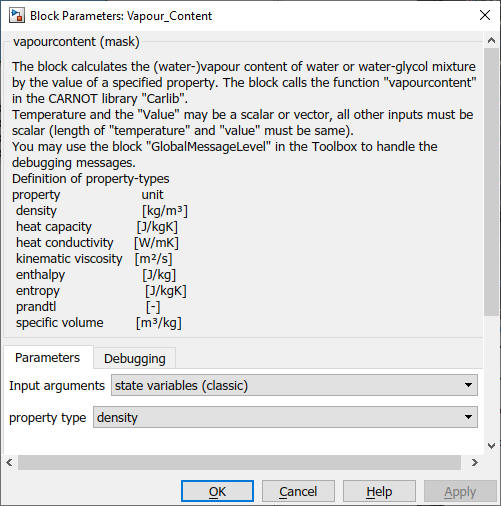
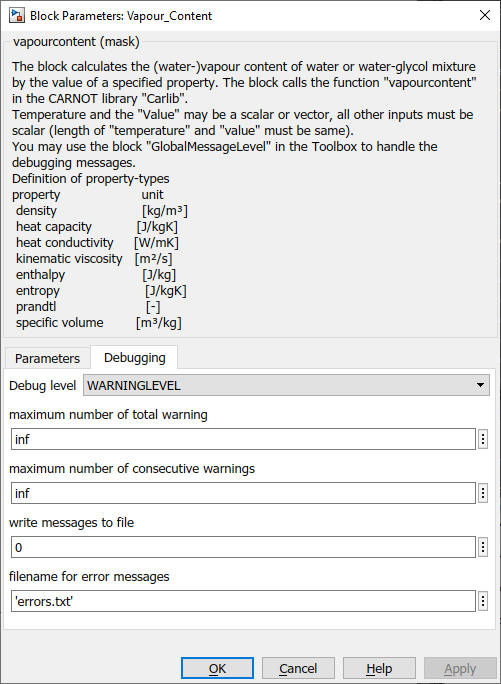

Vapour_Content
Path: CARNOT/Basic/Material_Properties
Purpose:
The block calculates the vapour content of the specified fluid property.
Description:
The block calculates the vapour content of the fluid by evaluating the
specified fluid property_ID (see Parameters and Dialog Box) according to
the inputs. The blocks performs the calculation:
vapourcontent = (propvalue - (prop)')/((prop)" - (prop)')
The ' state is the boiling fluid, the " state is the saturated steam.
If the fluid is in the two phase area (pressure == vapourpressure) the fluid
value is in the interval [0..1]. In the case of pure fluid (pressure >
vapourpressure), the vapourcontent is 0, in the case of pure steam
(pressure < vapourpressure), the vapourcontent is 1. The case determination
for the vapourpressure is set to a interval of [0.98*vapourpressure
.. 1.02*vapourpressure] because otherwise the vapourpressure has to meet
the value of the vapourpressure function exactly, which is also not exact.
Input:
| T | : | temperature (scalar or vector) in °C |
| p | : | pressure in Pa |
| Fluid_Type | : | see definition of CARNOT fluid types |
| Fluid_Mix | : | see definition of CARNOT fluid mixtures |
| value | : | value of the property |
Output:
| vapcont | : | vapour content in 0..1 |
Parameters and Dialog Box:

You can choose the inputs to be the :

Use the GlobalMessageLevel block to handle the debugging messages.
Examples:
Open the example explorer from the Matlab command window
ExampleBrowser
or load the examples via the CARNOT library.
Characteristics:
| Direct Feedthrough | : | Yes |
| Sample Time | : | Inherited from driving block |
| Vectorized | : | No |